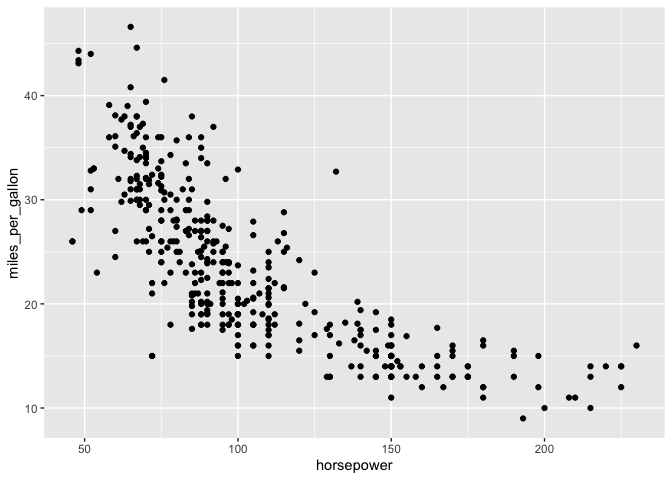

rsgl implements the SGL graphics language for use within R. SGL is a graphics language that is designed to look and feel like SQL, and is based on the grammar of graphics.
Installation
rsgl is not yet available on CRAN but can be installed from GitHub with:
# install.packages("devtools")
devtools::install_github("sgl-projects/rsgl")Usage
dbGetPlot is the primary interface to rsgl. It takes a DBI database connection and a SGL statement and returns a ggplot2 plot.
The following example demonstrates creating a DBI connection to an in-memory DuckDB database, loading it with data, and then generating a scatterplot from a SGL statement.
library(duckdb)
#> Warning: package 'duckdb' was built under R version 4.5.2
#> Loading required package: DBI
#> Warning: package 'DBI' was built under R version 4.5.2
library(rsgl)
#>
#> Attaching package: 'rsgl'
#> The following objects are masked from 'package:datasets':
#>
#> cars, trees
con <- dbConnect(duckdb())
dbWriteTable(con, "cars", cars)
dbGetPlot(con, "
visualize
horsepower as x,
miles_per_gallon as y
from cars
using points
")
#> Warning: Removed 14 rows containing missing values or values outside the scale range
#> (`geom_point()`).
Next steps
- Get started — a tutorial of rsgl and the SGL language.